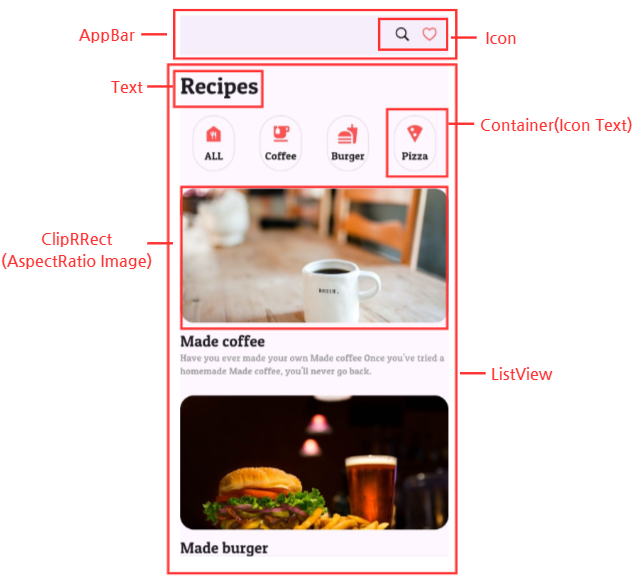
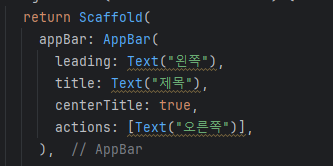
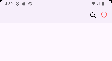
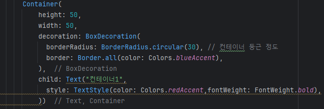
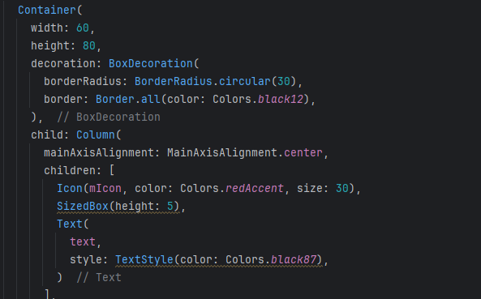
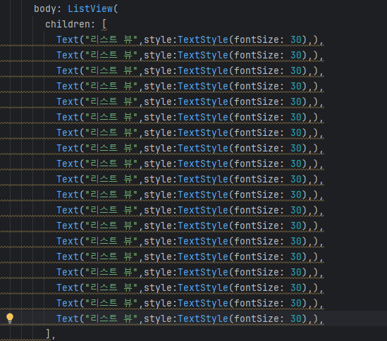
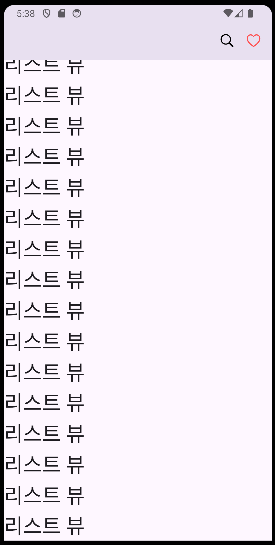
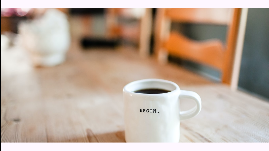
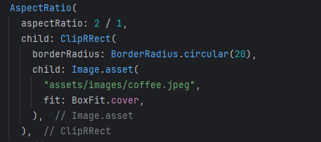

Chapter 05 레시피 앱 만들기
완성 화면


주요 화면 구성

1. AppBar 위젯


2. Icon 위젯


AppBar의 actions 속성을 활용해 아이콘을 오른쪽에 배치시킨다.
3. Container 위젯


컨테이너의 색깔, 크기, 둥근 정도를 조정할 수 있다.

컨테이너 내부에 child 속성을 활용해 다른 위젯을 자식 위젯으로 사용할 수 있다. Column 위젯을 사용해 아이콘과 텍스트를 세로로 배치한다.

4. ListView 위젯


리스트 뷰를 사용해 스크롤을 사용할 수 있다.

ListView.build 속성을 사용하면 List의 크기 만큼 반복적으로 데이터를 출력할 수 있다. itemCount 의 값 만큼 리스트 뷰 항목이 출력된다.
5. AspectRatio 위젯


가로 2 / 세로 1의 비율로 설정했다.
6. ClipRRect 위젯
